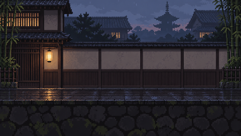
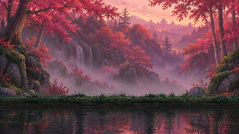
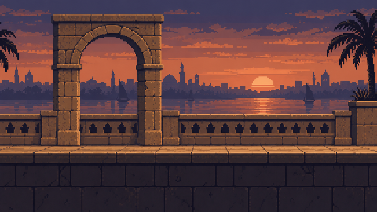
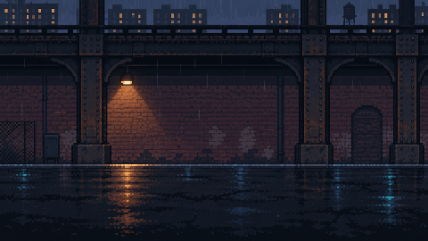

CMU 15-113 · Creative Web App
One Cut
Atlas
A pixel globe. A destination. A duel that feels personal.
Project walkthrough · Tony Liu
The starting point
A travel memory becomes
a game choice
The atlas gives each duel a place. A photo gives the fighter a personal palette.
I wanted the calm of exploring a map to meet the tension of a fight decided by one clean hit.
The challenge is making the whole experience feel like one game, with a consistent pixel scale and clear controls.

Original game art. First Cut informed the atmosphere and combat reference.
The working app
Send. Unlock. Duel.
The game uses its own keyboard and mouse controls.
Send a travel photo or choose a zone, then challenge it. Use the return button to resume the slides.
A manageable world
11 Travel Zones
- East Asia
- South Asia
- Southeast Asia
- West & Central Asia
- Europe
- Africa
- North America
- South America
- Oceania
- Arctic
- Antarctic
Each zone has a playable preset. Three flagship stages lead the visual direction. The remaining zones give the atlas room to grow.
A place with its own visual rhythm
Three flagship stages
Kyoto Rain
Timber and paper screens.
Amber light on wet stone.

Cairo River Dusk
Nile-side stone silhouettes.
Indigo shadows and copper dusk.

New York Underpass
Columns and a distant city.
Rain, asphalt and sodium light.
Visible feedback from an upload
A travel photo becomes a stage
A vision model reads the place from visible clues; an image model paints one original backdrop of it; the browser snaps the painting to the game's 960×540 grid with 48 colors.
People are ignored and never identified. The key stays on the server. If painting is unavailable, the region's stage is used.
Live: place recognition
{
"name": "Susukino Crossing",
"city": "Sapporo", "country": "Japan",
"zone": "east-asia", "confidence": 0.98,
"evidence": [
"Japanese kana and kanji appear on many illuminated commercial signs.",
"Snow piled beside wet pavement suggests a cold, snowy climate."
]
}Abridged from a real response · gpt-6-luna recognition · gpt-image-2 painting · 8 of 9 test photos placed in the right city.
The fight needs readable choices
Read the open line
- Mouse / W X S
- Set the blade line; standing in a cut's line blocks it
- Tap / hold J
- Quick cut, or charge a lunge
- Tap, then switch
- Feint
- Hold K
- Firm guard, longer counter
- Space / C
- Evade back or duck
- L / V
- Counter or shove
A white flash, a heavy spray and a slow fall mark the decisive cut; the winner keeps control for a short aftermath.
Feedback became concrete changes
What I changed in the brief
EARLIER DEMO
The photo upload did not produce the expected visual change.
Scenery felt too detailed and the map had no clear regional progression.
The result arrived before the finish felt complete.
THIS VERSION
An English game menu and immediate fighter preview.
Travel Zones sit behind Destinations. Simpler stages give the characters room.
A short victory phase keeps the character under player control.
How the app works
Small modules, focused iterations
| globe.js + region-presets.js | Choose a Travel Zone and its stage. |
| photo.js + avatar.js | Extract local colors, call the Render API, and preview the avatar. |
| Render → OpenAI Responses | Validate palette/outfit JSON; keep the key server-side. |
| engine.js | Resolve timing, blade lanes, guards and the victory phase. |
| render.js + art.js | Draw authored sprite poses, stage layers and persistent effects. |
| storage.js | Keep photos, destinations and progress on this device. |
AI assisted code and original game art. My input defined the direction, references and scope. The prompt log preserves the important prompts and records which tools handled each job.
Where the project can go next
More places, more motion
Live backend, bounded AI
Place recognition and arena painting run through Render with daily caps and a cache; first use can take longer while the free service wakes.
Further game development
Add more authored animation frames and regional stages, tune combat through playtesting, and later explore saved journeys across devices.
The next destination is a new duel.
Play One Cut Atlas ↗